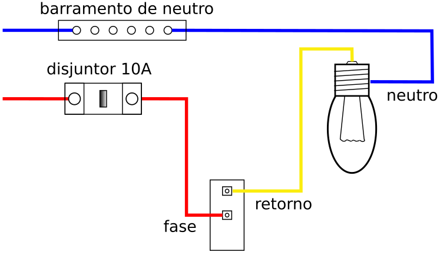
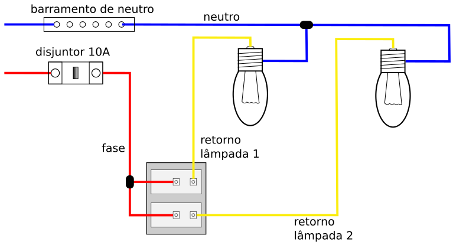
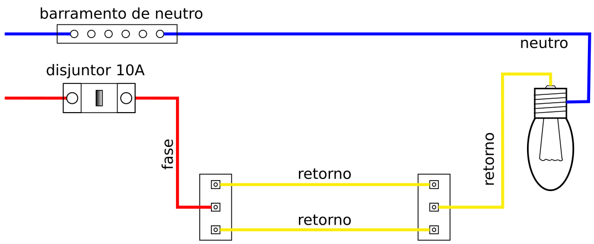
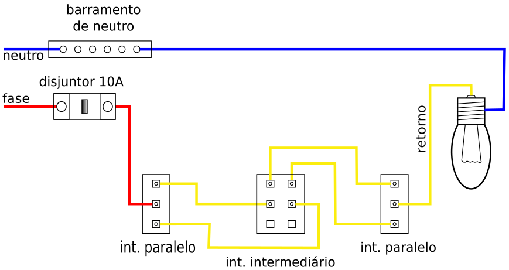
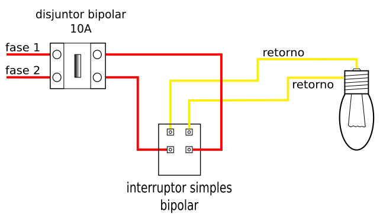
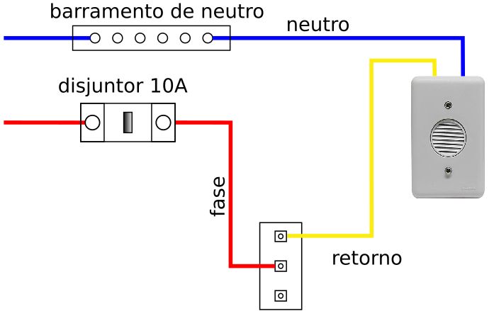

Guia em Instalações Elétricas Residenciais | Aula 14:
Tipos de Interruptores: Funções e Aplicações
Os interruptores são dispositivos de manobra destinados a abrir ou fechar circuitos elétricos. A escolha do modelo correto depende da necessidade de controle: de onde se quer ligar a luz e quantos pontos de luz serão comandados.
É o modelo mais básico, possuindo dois bornes de conexão (Fase e Retorno). Ele comanda um ou mais pontos de luz a partir de um único local.
Aplicação: Quartos pequenos, banheiros e áreas de serviço.
A regra de ouro da iluminação.
A Fase é conectada diretamente no interruptor, o Neutro é conectado à lâmpada e o Retorno interliga o interruptor à lâmpada.

Nota de padronização: O fio de retorno costuma ser amarelo, mas pode ser de qualquer outra cor, desde que não seja azul-claro (Neutro) nem verde/verde-amarelo (Terra).
O que é: Um conjunto com dois botões independentes que permite controlar duas lâmpadas (ou dois grupos de luzes) diferentes a partir do mesmo ponto.
Exemplos de uso: Perfeito para salas onde você quer acender o lustre principal em uma tecla e as luzes de apoio (como dicroicas ou fita de LED) na outra.
Entrada (Fase): A Fase principal conecta no borne de entrada. Se o modelo do interruptor não tiver conexão interna entre os botões, faz-se uma ponte (jumper) para alimentar a segunda tecla.
Saídas (Retornos): De cada tecla sai um fio de Retorno independente, indo cada um para o seu respectivo grupo de lâmpadas.

Possui três bornes. É utilizado para comandar uma lâmpada a partir de dois pontos diferentes. Eles trabalham sempre em pares.
Aplicação: Corredores, escadas e nas laterais da cama (entrada do quarto e cabeceira).
Para esta ligação, utilizamos dois fios extras que interligam os interruptores. Siga o padrão de cores para facilitar: Fase no centro do interruptor A, dois fios Amarelos ligando as laterais, e o fio de Retorno saindo do centro do interruptor B para a lâmpada. O Neutro vai sempre direto para a lâmpada.

Possui quatro bornes. Ele é utilizado quando se deseja comandar uma lâmpada de três ou mais pontos diferentes. Ele deve ser instalado obrigatoriamente entre dois interruptores paralelos.
Aplicação: Grandes auditórios, escadarias extensas ou quartos amplos.
Este sistema permite adicionar infinitos pontos de comando. Se quiser controlar de 5 pontos, por exemplo, usará 2 paralelos nas pontas e 3 intermediários entre eles.
Dica de Montagem: No interruptor intermediário, os fios vêm sempre em pares. O par que vem do interruptor anterior entra em um lado, e o par que vai para o próximo interruptor sai pelo outro.

Diferente dos outros, ele interrompe as duas fases simultaneamente (em sistemas 220V entre fases). Garante que não haja tensão no bocal da lâmpada quando desligado.
Aplicação: Instalações bifásicas sem neutro, onde a lâmpada é ligada entre Fase-Fase.
Obrigatório em circuitos 220V onde não há neutro. Ele possui 4 bornes: as duas Fases entram de um lado e os dois Retornos saem do outro em direção à lâmpada.

É um interruptor que retorna à posição original após ser pressionado (possui mola interna). Ele apenas envia um sinal elétrico temporário.
Aplicação: Campainhas, minuteria e sistemas de automação.
O pulsador funciona enviando um "pulso" de energia. A Fase entra no primeiro borne e o Retorno sai do segundo borne em direção à campainha (ou relé de minuteria). O Neutro é ligado diretamente ao dispositivo sonoro ou de iluminação.

| Tipo | Nº de Bornes | Função Principal |
|---|---|---|
| Simples | 2 | Comando de 1 ponto fixo. |
| Paralelo | 3 | Comando de 2 pontos diferentes. |
| Intermediário | 4 | Comando de 3 ou mais diferentes. |
| Bipolar | 4 | Secciona duas fases (Segurança 220V). |
| Pulsador | 2 | Acionamento de campainhas/minuterias. |
Questão 1: Qual é o tipo de interruptor necessário para ligar uma lâmpada no início de um corredor e desligá-la no final?
Resposta: Interruptores Paralelos (são necessários dois deles).
Questão 2: Para comandar uma lâmpada de 4 pontos diferentes, quantos e quais interruptores são necessários?
Resposta: São necessários 2 Interruptores Paralelos (nas extremidades) e 2 Interruptores Intermediários (no meio).
Questão 3: Em uma instalação Fase-Fase (220V), por que o uso do Interruptor Bipolar é mais seguro que o simples?
Resposta: Porque o interruptor simples cortaria apenas uma fase, deixando a lâmpada energizada pela outra. O bipolar corta ambas, eliminando o risco de choque no bocal.
Questão 4: Qual a principal diferença física interna de um interruptor pulsador para um interruptor simples?
Resposta: O pulsador possui uma mola que faz o contato voltar para a posição "aberto" assim que você solta o botão, enquanto o simples mantém a posição (ligado ou desligado).